class: center, middle # The smaller forest garden _Principles, not lots of trees_ [](/) by Jake Rayson **Llangwm & District Gardening Club** üå≥ _Monday 4 November 2019_ üå≥ [@NatureWorksGdn](https://twitter.com/NatureWorksGdn) [www.forestgarden.wales/talks/smaller](https://www.forestgarden.wales/talks/smaller/) ##### Press `P` to see notes and credits ??? * This work is licensed under a [Creative Commons Attribution 4.0 International License](http://creativecommons.org/licenses/by/4.0/), embedded work may have other licenses. --- class: center, middle # The smaller forest garden ### _Principles, not lots of trees_  ??? * [Creating a Forest Garden](https://www.agroforestry.co.uk/product/creating-a-forest-garden-2/): buy this book --- # What is a forest garden? ### Multi-layered perennials,<br>emulating edge of woodland,<br>working with nature to grow edible crops ### Wild life everywhere<br>balanced with<br>appropriate plants ??? ## History * _Cool Temperate_ forest gardening * Robert Hart, [Forest Gardening](https://en.wikipedia.org/wiki/Robert_Hart_(horticulturist)) * [Martin Crawford](https://www.agroforestry.co.uk/), [Creating a Forest Garden](https://www.agroforestry.co.uk/product/creating-a-forest-garden-2/) --- # Forest garden principles 1. Productive 2. Sustainable 3. Low maintenance  --- # Forest garden principles 1. **Productive** 2. Sustainable 3. Low maintenance  --- # 1. Productive * Fruit, nuts, leaves, shoots, roots‚Ķ * Herbs, wood, canes, dyes etc * [Multi-layered](https://www.forestgarden.wales/blog/seven-layers-forest-garden/)  ??? * Using all space --- # Forest garden principles 1. Productive 2. **Sustainable** 3. Low maintenance  --- # 2. Sustainable * Mineral accumulators & nitrogen fixers * Wildlife predators for pests * Permanent ‚Äúliving mulch‚Äù ground cover * Trees, perennials & soil biota sequester carbon. * Biodiversity encouraged  --- # Forest garden principles 1. Productive 2. Sustainable 3. **Low maintenance**  --- # 3. Low maintenance * Minimal weeding * No watering * No digging * No fertilisers or compost  ??? * Resilient, in range, number species & perennials --- class: center, middle # From yards to acres  --- <img class="full-screen" src="img/fg1-41134476592.jpg" alt="Pasture field with polytunnel"> --- <img class="full-screen" src="img/misty-wildlife-pond-26465730067.jpg" alt="Misty wildlife pond"> --- <img class="full-screen" src="img/cornus-42141134465.jpg" alt="Polytunnel & windbreak hedge"> --- 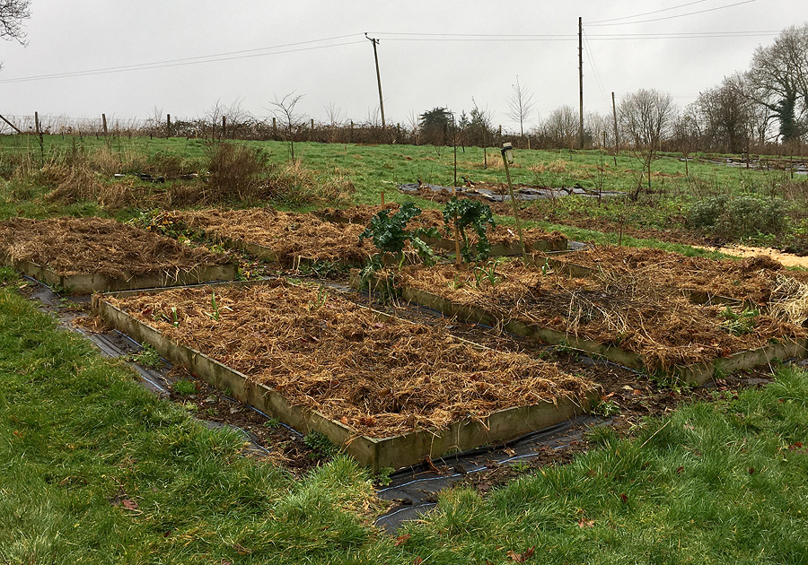 --- <img class="full-screen" src="img/propagation-38830116035.jpg" alt="Propagation raised beds"> --- 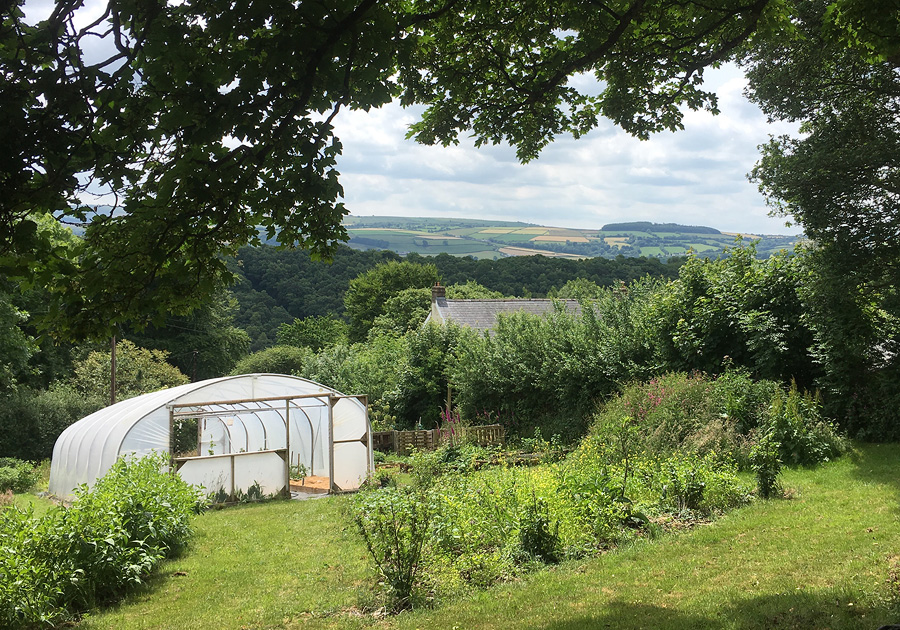 --- class: center # Why small forest gardens? --- class: center # Why small forest gardens? # <span style="font-size:10rem;">üíµ</span> --- class: center # Why small forest gardens? # <span style="font-size:10rem;">üíµ</span> Oh, and connecting **people** üòú --- class: center # Why small forest gardens? # <span style="font-size:10rem;">üíµ</span> Oh, and connecting **people** üòú # <span style="font-size:10rem;">üå≥</span> --- # In a smaller forest garden‚Ķ  --- # In a smaller forest garden‚Ķ  ## _The principles are the same_ --- # In a smaller forest garden‚Ķ  ## _The principles are the same_ ## _Everything is magnified_ --- 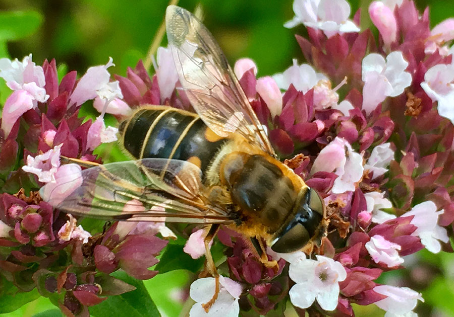 --- # Everything is magnified ### Garden design principles * Aspect * Plant size * Conditions  ??? ## Garden design principles * Aspect * Light * Slope * Plant size * Height * Diameter * Habit * Conditions * Rainfall * Water * pH * Soil type --- # Everything is magnified ### Forest garden principles * Productive * Sustainable: **Native plants** * Low maintenance  ??? * Maximise * Paths * Yield --- # Importance of wildlife * Gardening in a time of mass extinction * [15% species under threat of extinction in UK](https://www.bto.org/sites/default/files/publications/state-of-nature-2019-summary-report-uk.pdf) * Climate Emergency - [1.5¬∞C by 2026](https://climatenewsnetwork.net/warming-exceed-1-5c-limit-2026/) * The resilient, wildlife forest garden  --- # Importance of native plants * [A New Garden Ethic](https://newsociety.com/Books/N/A-New-Garden-Ethic) by [Benjamin Vogt](https://www.monarchgard.com) * Co-evolved with fauna * [Database of Insects & their food plants](https://www.brc.ac.uk/dbif/homepage.aspx) eg [Tansy](https://www.brc.ac.uk/dbif/hostsresults.aspx?hostid=5821) * [RHS plant finder](https://www.rhs.org.uk/Plants/Search-Form) **native**  ??? * Tansy * 6 beetles * 1 fly * 18 micro-moths --- class: center, middle ### ‚Äú‚Ķgardening with native plants might wake us to environmental issues & reconnect us to other species‚Ķ‚Äù [~ Benjamin Vogt](https://mobile.twitter.com/BRVogt/status/1176170104117235713) --- # Small garden, Dublin * Modern, single storey, loft rooms * 20 miles north of Dublin, coastal * 3 adults, cats & dogs * South west facing * Front garden 15m x 15m * Back garden 15m x 23m --- 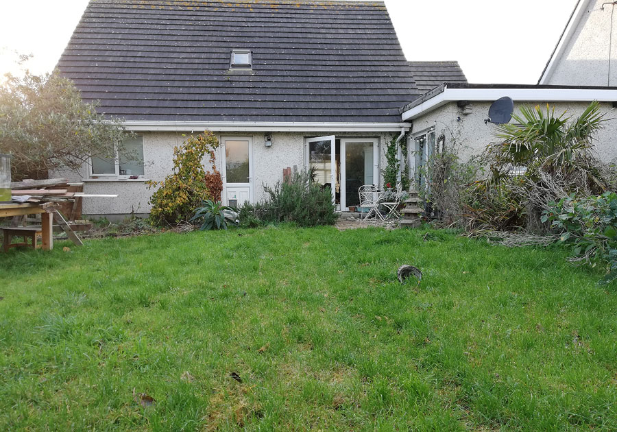 --- 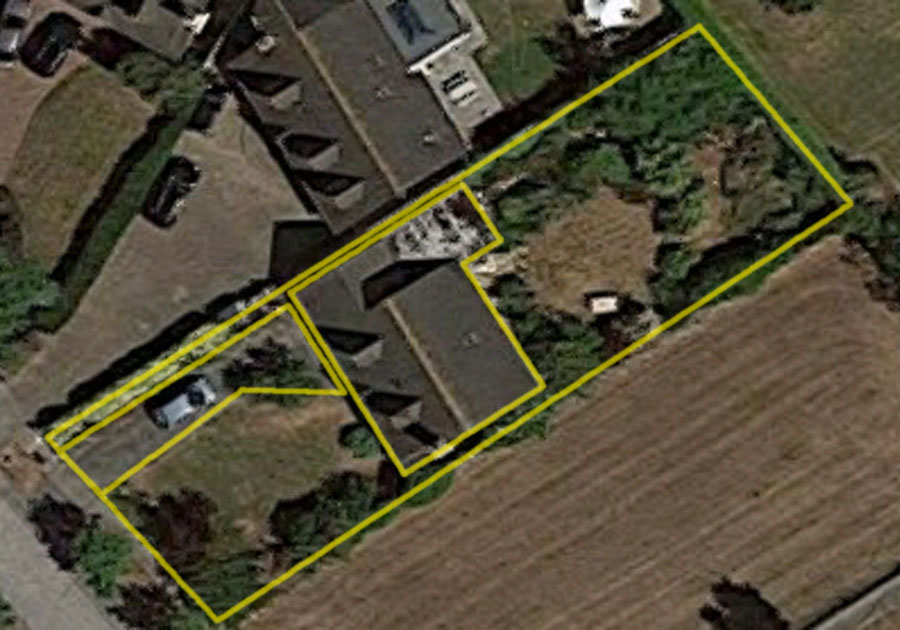 --- 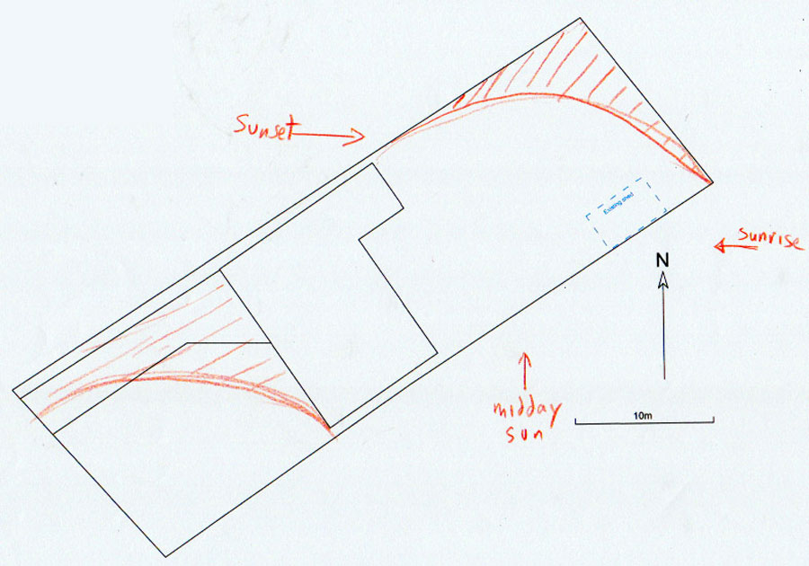 --- 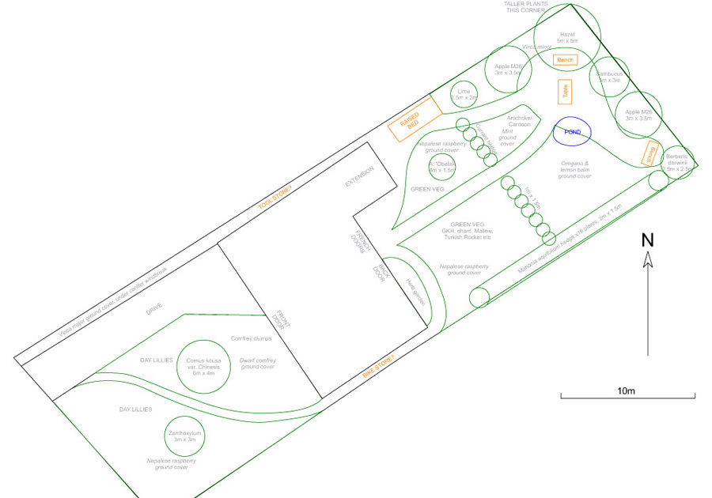 --- # 1930s semi-detached, Llandeilo * Edge of town * 1 adult, 1 child * Front garden * South east facing * 10m x 7m --- 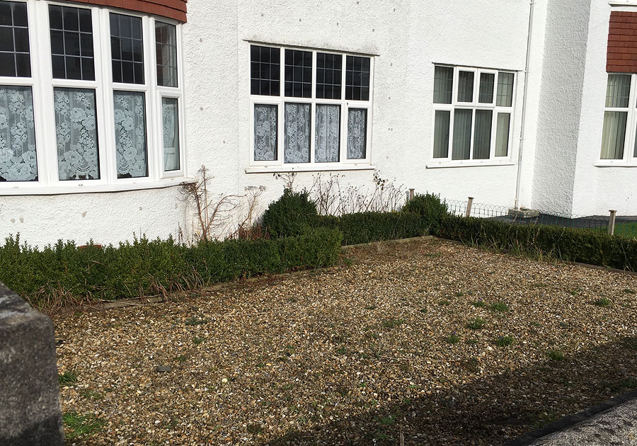 --- <img class="full-screen" src="img/01-from-pavement-7A7EAC0C.jpg" alt="Front of white 1930s house, superimposed photomontage of plants"> --- <img class="full-screen" src="img/02-from-pavement-7A7EAC0C.jpg" alt="Front of white 1930s house, tree photoshopped on top of photomontage"> --- 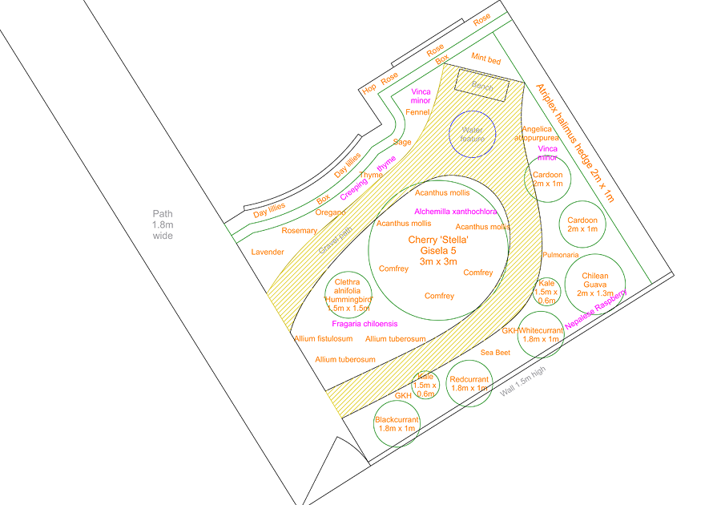 --- # Victorian terrace, London * Tottenham, north London * 2 adults, 2 teenagers, 1 cat * Large Victorian terrace * West facing back garden * 18m x 6m --- 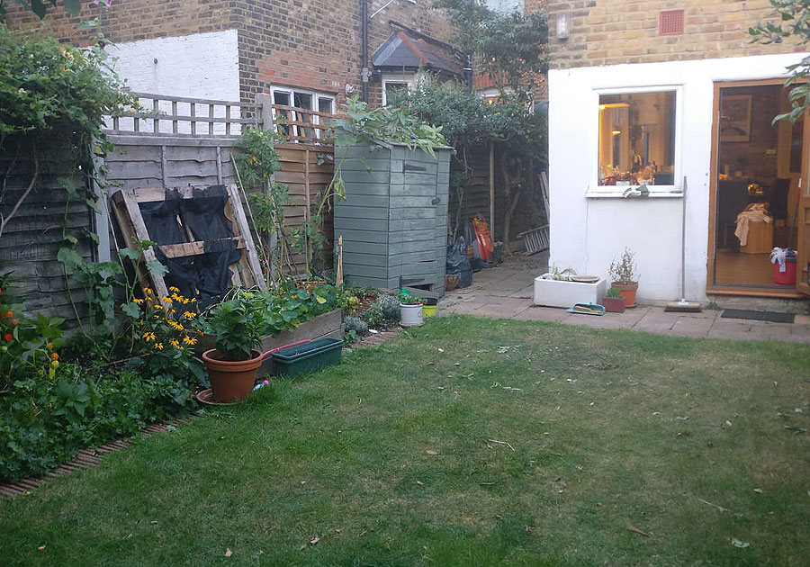 --- 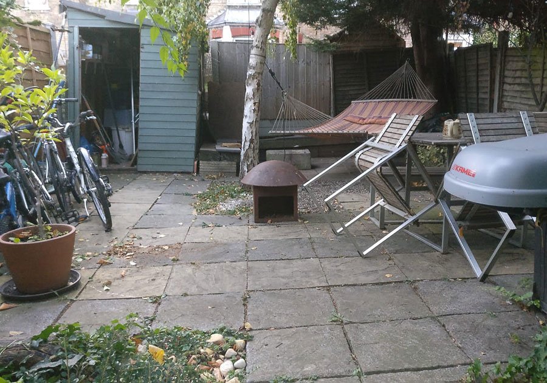 --- 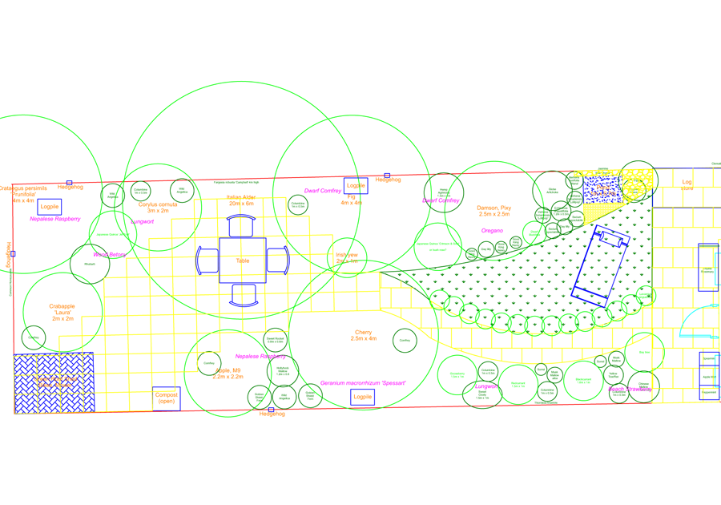 --- # Choice of smaller plants * [Turkish Hazel](https://pfaf.org/user/Plant.aspx?LatinName=Corylus+cornuta) * [Broad-leaved Cockspur Thorn 'Prunifolia'](https://www.rhs.org.uk/Plants/89242/Crataegus-persimilis-Prunifolia/Details) * [Buddleia 'Lo & Behold'](https://www.thompson-morgan.com/p/buddleja-lo-behold-white-chip/t67876TM) * [Crabapple 'Laura'](https://www.rhs.org.uk/Plants/124642/Malus-Laura/Details) * [Apple](https://www.orangepippin.com/varieties/apples) on semi-dwarf [M9 rootstock](https://www.orangepippintrees.co.uk/articles/fruit-tree-rootstock-tree-sizes) * [Damson](https://www.orangepippin.com/varieties/plums) on semi-dwarf [Pixy rootstock](https://www.orangepippintrees.co.uk/articles/fruit-tree-rootstock-tree-sizes) * [Dwarf Comfrey](https://www.rhs.org.uk/Plants/75444/Symphytum-ibericum/Details) * [Musk Mallow](https://pfaf.org/user/plant.aspx?LatinName=Malva+moschata)     ??? * Hawthorn May blossom * Guelder Rose blossom * Guelder Rose berries * Crabapple blossom --- class: center, middle # No matter the size‚Ķ ### _‚Ķgarden for everyone_  ??? ## _Limiting or liberating_? * Edible * Native * Wildlife --- # Appendix: reference * Website: [www.forestgarden.wales](https://www.forestgarden.wales) * Twitter: [@NatureWorksGdn](https://twitter.com/NatureWorksGdn) * [Martin Crawford](https://www.agroforestry.co.uk/): books, courses, plants * [Plants for a Future](http://www.pfaf.org/): massive database of useful plants * [RHS Plant finder](https://www.rhs.org.uk/Plants/Search-Form): database with **native filter** * [Orange Pippin](https://www.orangepippin.com/apples): super fruit tree reference * [A New Garden Ethic](https://www.newsociety.com/Books/N/A-New-Garden-Ethic): book by Benjamin Vogt